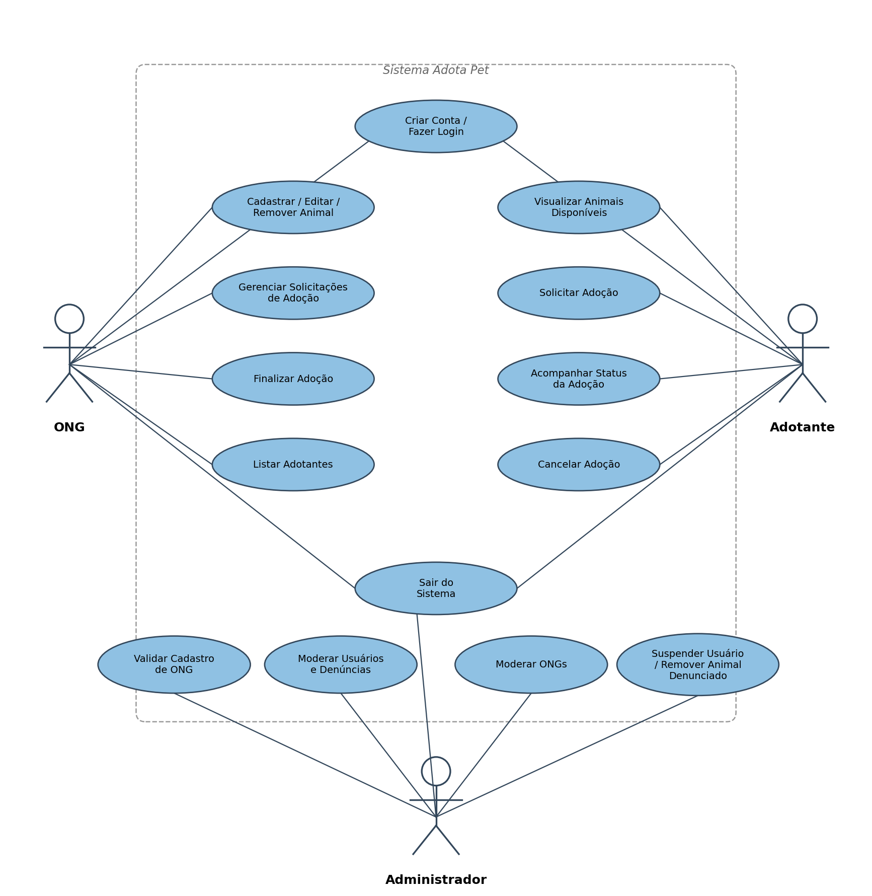
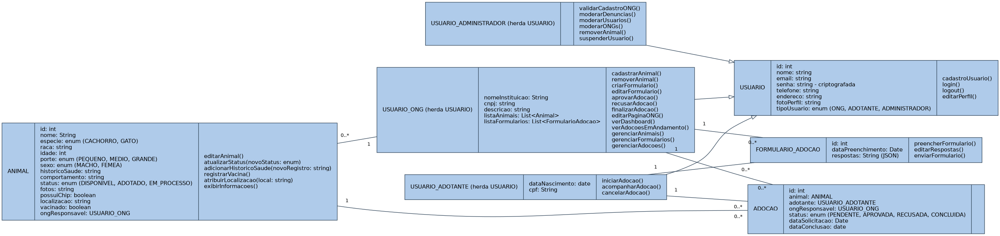
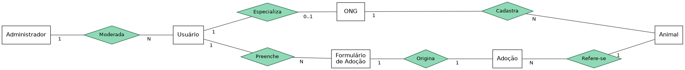

Uma plataforma que conecta ONGs de proteção animal a futuras famílias, do primeiro cadastro até a adoção concluída.
O Adota Pet organiza o processo de adoção de animais em um único lugar. ONGs cadastram e mantêm os animais disponíveis, adotantes acompanham o andamento das suas solicitações, e um administrador modera o funcionamento geral da plataforma.
O sistema cobre o fluxo completo: visualização dos animais disponíveis, envio de formulário de adoção, aprovação ou recusa pela ONG responsável e acompanhamento do status até a conclusão.
Cadastra, edita e remove animais, gerencia formulários e solicitações de adoção, e lista adotantes.
Cria conta, visualiza animais disponíveis, solicita adoção e acompanha o status do pedido.
Valida o cadastro de ONGs, modera usuários e denúncias, e supervisiona a plataforma.
Mapeia as ações disponíveis para cada ator do sistema: a ONG cadastra e gerencia animais e solicitações, enquanto o adotante visualiza animais, solicita e acompanha suas adoções.

Estrutura as entidades do sistema — Usuário, Animal, Adoção e Formulário de Adoção — e como os tipos de usuário (ONG, Adotante e Administrador) herdam comportamentos e responsabilidades específicas.

Representa como os dados são armazenados: usuários preenchem formulários que originam adoções, ONGs cadastram animais, e um administrador modera os usuários da plataforma.
